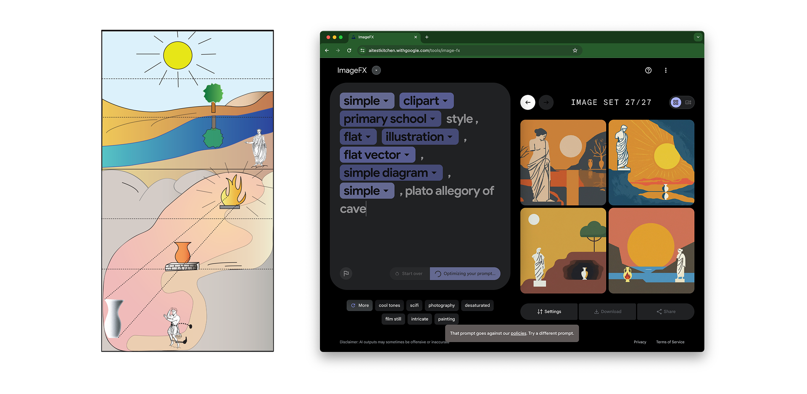
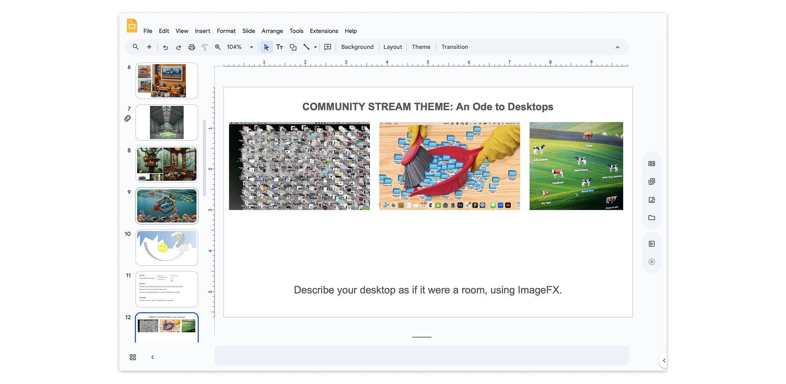

Product and interaction designer exploring how tools shape — and are shaped by — the people who use them. I work with technical users navigating complex data, combining interaction design, creative coding, and critical inquiry.
This is self-contained HTML coded from scratch and set in Fluxisch Else from Open Source Publishing, if it loads for you. Website written using Visual Studio Code, hosted on GitHub via Microsoft.
Fall 2023 – Spring 2024 at labs.google. Role: Design Technologist (Maker in Residence). Team: Brianna Doyle, Jamie Barrar, James Scott, Beatriz Lozano. Additional support: Trudy Painter, Soyeon Kim, Shashwath Santosh, Sam Lawton; Kory Mathewson, Allan Holmes.
Collaborating with various product teams across Labs (AI Test Kitchen: TextFX, ImageFX, MusicFX; NotebookLM) and Google Creative Lab (CL),
I explored how community members might make experimental AI applications their own.

A sample target image by Gothika, via Wikimedia Commons, and an accompanying prompting process still.
A competitive game where participants recreate target images with ImageFX, given a category ((art) historical, diagram/information, internet/pop culture, wildcard) and a time constraint of eight minutes.
The format helped us gain a sense of people’s mental models of AI image synthesis through trial and error.
Initially tested with internal teammates on Discord and Google Slides, the game was later deployed at a public event in LA.
2. Desktop Interface Noodling

Introduction to a community stream about personal computer desktop interfaces.
A collaborative Google Slides-based workshop where community members shared their desktop setups, then reimagined them as architectural spaces using ImageFX.
I modified a MusicFX track in the background live as participants explored. The workshop surfaced new opportunities for cross-tool interaction patterns.
Produced sketches using AI Test Kitchen tools to explore workflows incorporating synthesized media: testing how AI-generated content could integrate into creative coding practices.
MusicFX output-inspired p5.js sketch. Video Description: a cursor drags an array of colors in vibrant hues across a black background; the colors shimmer and blur, reacting to audio input.
MusicFX output-inspired p5.js sketch. Video Description: pixels of a webcam feed pulse to the rhythm of an ambient soundscape. The color of the video shifts between pinks/reds, greens, and yellow.